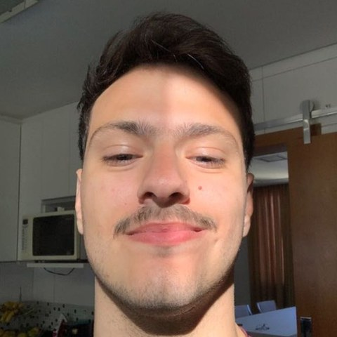

Arthur Cordeiro
Desenvolvedor de sistemas. Construo automações em Python e no ecossistema Microsoft no Banco Stellantis, e estudo Sistemas de Informação na UFMG.

Sobre
Trabalho transformando processos manuais e repetitivos em rotinas automáticas e confiáveis. No dia a dia, isso significa escrever robôs em Python que operam navegadores e planilhas, montar fluxos no Power Automate e entregar painéis no Power BI para as áreas de negócio.
Sou apaixonado por matemática. Gosto de entender por que as coisas funcionam, e esse hábito aparece no código: modelar bem o problema antes de escrever a primeira linha costuma ser a parte mais importante da solução.
Trajetória
-
Técnico em Desenvolvimento de Sistemas
Coltec, UFMG
-
Bacharelado em Sistemas de Informação
UFMG, em andamento
-
Desenvolvedor de automações
Banco Stellantis, atual
Ferramentas
- Python
- Automação de processos (RPA), Playwright para navegadores, automação de Excel via COM, integração com APIs.
- Ecossistema Microsoft
- Power Automate, Power BI, SharePoint, Microsoft Forms e Excel.
- Base
- Git, Linux, estruturas de dados, álgebra linear e sistemas operacionais.
Projetos pessoais
Videos
Biblioteca pessoal de cursos em vídeo que roda num servidor Jellyfin em Arch Linux, com os arquivos armazenados no Google Drive e montados localmente pelo rclone como serviço do systemd.